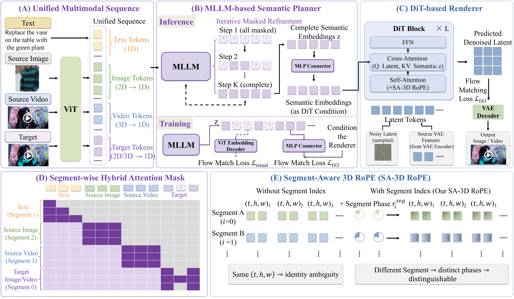

MLLM-based Semantic Planner
The planner reasons over text, source images, source videos, and target placeholders.
MLLM Planner · DiT Renderer · Unified Video Generation and Editing
Bernini is a unified framework for video generation and editing that combines an MLLM-based semantic planner with a DiT-based renderer.
Demo Video
Placeholder for the Bernini demo video.
Prompt-driven video editing cases. Hover over a card to reveal the editing instruction and play the before/after videos.
Reference images provide appearance, identity, material, weather, style, or scene guidance.
R2V samples use three reference images as inputs and generate one output video. Hover over a row to play the generated video.
Bernini contains an MLLM-based semantic planner and a DiT-based renderer.

The planner reasons over text, source images, source videos, and target placeholders.
The renderer performs flow-matching denoising over VAE latent tokens.
SA-3D RoPE distinguishes tokens from different visual segments.
@artical{bernini,
title = {Bernini: Latent Semantic Planning for Video Diffusion},
author = {Chenchen Liu and Junyi Chen and Lei Li and Lu Chi and Mingzhen Sun and Zhuoying Li and Yi Fu and Ruoyu Guo and Yiheng Wu and Ge Bai and Zehuan Yuan},
journal = {arXiv preprint arXiv:2605.22344},
year = {2026}
}